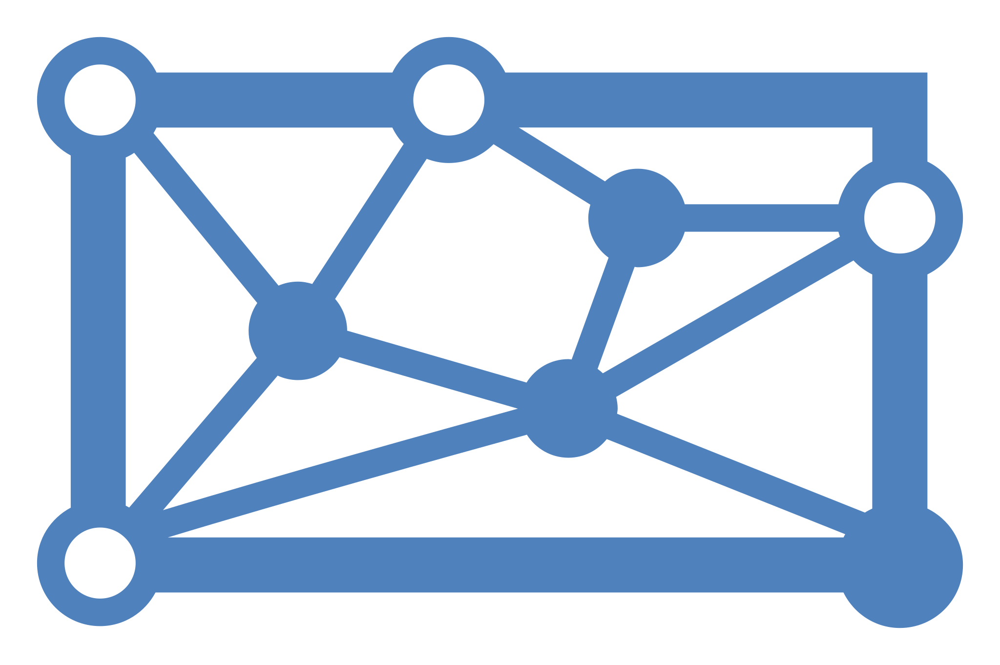

Cortex Agent in dbtA semantic view answers one question at a time. A Cortex Agent plans, calls tools (possibly several times), charts the results and explains them in business language. In TVM's dbt project it's just another dbt model.
The agent as a dbt model
Your team project includes a small custom materialization, macros/materializations/cortex_agent.sql. It wraps the model body in CREATE OR REPLACE AGENT … FROM SPECIFICATION $$…$$ and runs the grants you list in meta. Because the semantic view is referenced with ref(), dbt always builds it first.
{{ config(materialized='cortex_agent',
meta={'display_name': 'Churn Insights',
'comment': 'Answers questions about subscriber churn for the CRM team',
'cowork_object': 'SNOWFLAKE_INTELLIGENCE_OBJECT_DEFAULT'}) }} # only if TVM curates CoWork, see below
models:
orchestration: auto
orchestration:
budget: { seconds: 60, tokens: 20000 } # cost guardrail per answer
instructions:
response: |
You answer for TVM's CRM team. Lead with the number, then one sentence of context.
Always state the time period and any filters you used. Amounts are SEK.
orchestration: |
Use the churn tool for anything about subscribers, churn or retention.
If a question has no time period, use the last 12 complete months.
If a question is about individual people, decline: only aggregates are available.
sample_questions:
- question: "How did churn develop over the last 12 months?"
tools:
- tool_spec:
type: "cortex_analyst_text_to_sql"
name: "data"
description: "Subscriber churn, retention and active subscribers by month, plan and channel. Use for any how-many / how-much / trend question about subscribers."
- tool_spec: { type: "data_to_chart", name: "data_to_chart", description: "Charts from query results" }
tool_resources:
data: # must match the tool name above
semantic_view: "{{ ref('sv_team_{{N}}') }}"
execution_environment: { type: warehouse, warehouse: "{{ target.warehouse }}", query_timeout: 120 }dbt build # semantic view → agent → MCP serverTest it right away in Snowsight under AI & ML → Agents. Then test it where business users will use it: Snowflake CoWork, covered next.
Test in Snowflake CoWork
Snowflake CoWork (formerly Snowflake Intelligence) is the chat interface for business users at ai.snowflake.com. It's the most realistic test of your MVP: the same agent, no code, run as a real user with their own role and masking. Your team tests in both places: CoWork (how a business user experiences it) and Claude over MCP (how other tools use it).
How your agent shows up in CoWork
| TVM's account has… | What you do |
|---|---|
| No CoWork object | Nothing. Users see every agent they have USAGE on. Leave cowork_object out of meta. |
| A CoWork object (a curated list) | Set 'cowork_object': 'SNOWFLAKE_INTELLIGENCE_OBJECT_DEFAULT' in meta. dbt adds the agent on the first build, and the next builds keep it. Your role needs MODIFY on the object. Astrid sets this up. |
Not sure which applies? Run SHOW SNOWFLAKE INTELLIGENCES;. No rows means no object.
Test checklist
- Open ai.snowflake.com and pick your agent (it shows its
display_name). - Run your golden questions. Check the answer, the chart, and the SQL shown under the answer.
- Check the role. CoWork starts with your default role and warehouse. If the agent doesn't show up, switch to the dev role you built it with.
- Stretch: if TVM has a business-user role, grant it the agent (
grant_usage_toinmeta) and test with it. That role needsUSAGEon the agent, the semantic view and the schema, plusSELECTon the underlying tables. - Give feedback with thumbs up / down. It ends up in the agent's monitoring, which is a good habit for the MVP.
dbt build. If an answer differs between them, it's usually the role, so check which role each one runs as.Built an agent in the UI? Bring it into dbt
Agents created or tuned under AI & ML » Agents can be exported the same way. You can edit AGENT_TEAM_{{N}} directly: CoWork uses the change right away. The next dbt build replaces it with what's in the file, so export and paste before anyone builds.
export_yaml --args "{name: {{DEV_DB}}.{{SCHEMA}}.AGENT_TEAM_{{N}}, kind: agent}"Run it as Run operation in the bottom panel, then paste the output into {{FOLDER}}/agent_team_{{N}}.sql. The export turns the semantic view into {{ ref(…) }} and the warehouse into {{ target.warehouse }}, so the model works in every team's target. Add 'cowork_object' back to meta if your account needs it.
Best practices
Instructions
✓ Do
- Say who the agent serves and what they decide
- Put routing rules in
orchestrationand tone and format inresponse - Give defaults: time period, currency, rounding
- Say what to do when something is out of scope
- Ask it to state its assumptions (period, filters)
✗ Don't
- Restate the semantic view's business logic. Keep metric definitions in one place, the semantic view
- Write vague instructions like "be helpful and accurate"
- Pile up conflicting rules, which makes reasoning less consistent
Tools
- The tool description is the routing signal. Describe what data the tool covers and when to use it, using words from your golden questions.
- Start with one analyst tool (your semantic view) plus
data_to_chart. Add tools only when a golden question needs one. - Multiple semantic views? Give them clearly distinct descriptions. The agent picks one per question and doesn't join across semantic views.
- Text values that users type freely (titles, show names, campaign names)? Add a Cortex Search service to match them reliably.
- Always point
execution_environmentat a warehouse you control, with a timeout.
Test like you mean it
- Run all 10 golden questions. Note right / partly right / wrong.
- For each miss, ask "show me the SQL". The fix is usually in the semantic view (a missing relationship, a vague description, a missing metric) rather than in the agent.
- Re-run after every change. One fix can break another question.
- Stretch: turn the golden questions into a dataset and run a Cortex Agent evaluation. It scores answer correctness, tool selection and logical consistency.
Ask CoCo
Open CoCo in your workspace and paste one of these. Fill in the <placeholders>. Always read what it proposes before you build.
Rewrite the instructions in {{FOLDER}}/agent_team_{{N}}.sql for <audience>: lead with the number, state the period, decline questions outside <scope>.
Write a tool description for the data tool, using the words from our golden questions, so the agent knows exactly when to use it.
Our agent answered "<question>" wrong. Here's the SQL it used: <sql>. Is the semantic view or the instructions the problem?